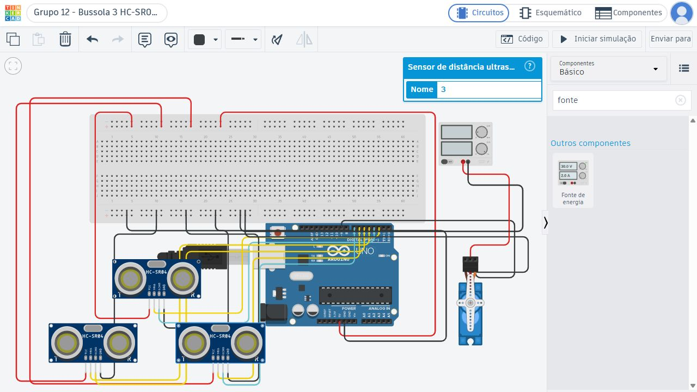

HC-SR04 de quatro pinos: VCC, TRIG, ECHO e GND. Alimentação de 5 V.
Abrir sketch · Guia da prática · PDF de código e montagem
Abrir montagem atual de três HC-SR04 no Tinkercad — montagem salva em 18/11, compilada e com eventos e decisões A, B e C conferidos no simulador.

P+ e N- são os trilhos positivo dos sensores e GND comum. Contatos numerados da esquerda para a direita na vista superior, de 1 a 50. Não confundir com colunas a–j.
| Origem | Destino | Função |
|---|---|---|
| HC-SR04 A VCC | P+5 | 5 V sensores |
| HC-SR04 A GND | N-4 | GND |
| HC-SR04 A TRIG | UNO D2 | Sinal |
| HC-SR04 A ECHO | UNO D3 | Sinal |
| HC-SR04 B VCC | P+10 | 5 V sensores |
| HC-SR04 B GND | N-9 | GND |
| HC-SR04 B TRIG | UNO D4 | Sinal |
| HC-SR04 B ECHO | UNO D5 | Sinal |
| HC-SR04 C VCC | P+15 | 5 V sensores |
| HC-SR04 C GND | N-14 | GND |
| HC-SR04 C TRIG | UNO D6 | Sinal |
| HC-SR04 C ECHO | UNO D7 | Sinal |
| UNO 5 V | P+20 | 5 V sensores |
| UNO GND | N-19 | GND |
| Servo sinal | UNO D9 | Sinal |
| Servo positivo | Fonte externa +5 V | 5 V servo |
| Servo GND | N-24 | GND |
| Fonte externa negativo | N-23 | GND |
Utilizar a primeira metade dos trilhos; verificar continuidade antes de ligar. Fonte do servo separada, com GND comum e positivos separados.
Uma unidade funcionou no teste físico relatado em 18/11. A integração física com três sensores e a ausência de interferência ainda precisam de teste conjunto. A simulação ideal não reproduz ecos entre rotas. Os alvos representam passagens; o sensor não classifica pessoas.